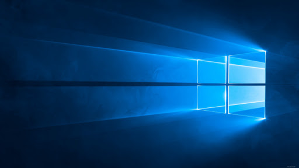

Сколько горячих клавиш Windows вы знаете? Три, может четыре. Но на деле же их более 120. Все мы сегодня конечно же не рассмотрим, но о самых интересных вы сегодня узнаете. Поехали!
Ctrl+N — создать новый документ
Ctrl+Y — повторить отмененное действие
Ctrl+Z — отменить последнее изменение
Ctrl+Home — переместиться в начало документа
Ctrl+End — переместиться в конец
Windows+E — запустить Проводник Windows
Windows+D — свернуть все окна, перейдя на рабочий стол, или восстановить окна
Alt+Tab — позволяет переключаться между открытыми окнами. Удерживая Alt, нажми несколько раз Tab, выбери нужное изображение окна и отпусти клавиши. Кроме того, можно использовать сочетание Windows+Tab. В этом случае несколько нажатий Tab также позволяют выбрать нужное окно, после чего необходимо нажать Enter
Alt+Tab+Shift и Windows+Tab+Shift прокручивают окна в обратном направлении. Alt — вызвать системное меню открытого окна. Работать в нем можно используя стрелки или Alt+буква. После нажатия Alt появляются подчеркнутые или выделенные буквы, нажатие которых открывает соответствующий раздел меню
Shift+F10 — открыть контекстное меню текущего объекта и выбрать раздел можно с помощью стрелок Вверх/Вниз. Это сочетание заменяет нажатие правой кнопки мыши. Кроме того, в операционной системе Windows возможно задать индивидуальные комбинации клавиш для быстрого вызова программ. На рабочем столе кликни по ярлыку нужной программы правой кнопкой мыши и выбери раздел «Свойства». В диалоговом окне найди вкладку «Ярлык». В поле «Быстрый вызов» введи желаемую клавишу. Ctrl+Alt перед выбранной клавишей появятся автоматически. Затем нажмите Оk. Для вызова нужной программы нужно будет использовать Ctrl+Alt+заданная клавиша
Ctrl+Shift+Esc — вызов диспетчера задач
Ctrl+Space — убрать форматирование с выделенного участка в MS Excel. Изменяет форматирование вводимого дальше текста
Ctrl+0 — изменить интервал между абзацами в MS Excel
Ctrl+1 — задает одинарный интервал между строк в MS Excel
Ctrl+пробел — выбрать колонку в MS Excel
Shift+пробел — выбрать ряд в MS Excel
Ctrl+Page Up — перейти на следующий лист книги в MS Excel
Ctrl+Shift+N — открывает новое окно в режиме инкогнито в Google Chrome
В этой статье вы узнали о свмых интересных горячих клавишах Windows. А по ссылке слева в начале статьи вы сможете узнать о самых интресных горячих клавишах в MAC OS.
Спасибо за прочтение!
Разработчик сайта: Егор Мерсов